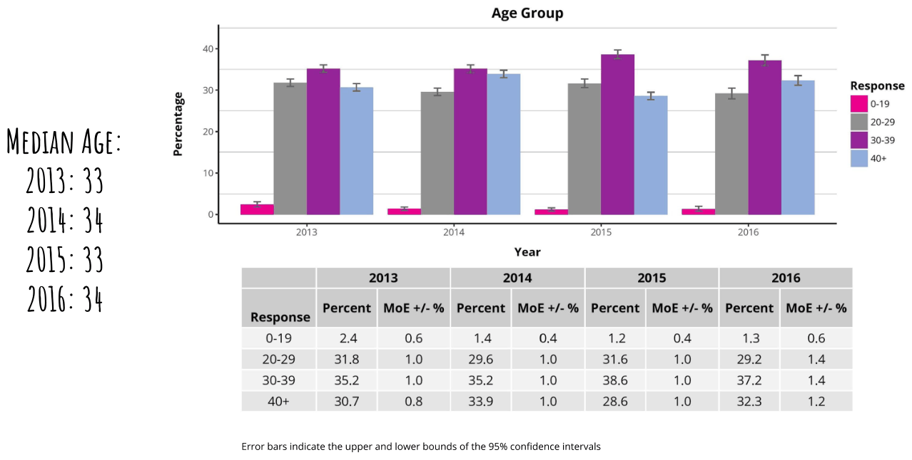
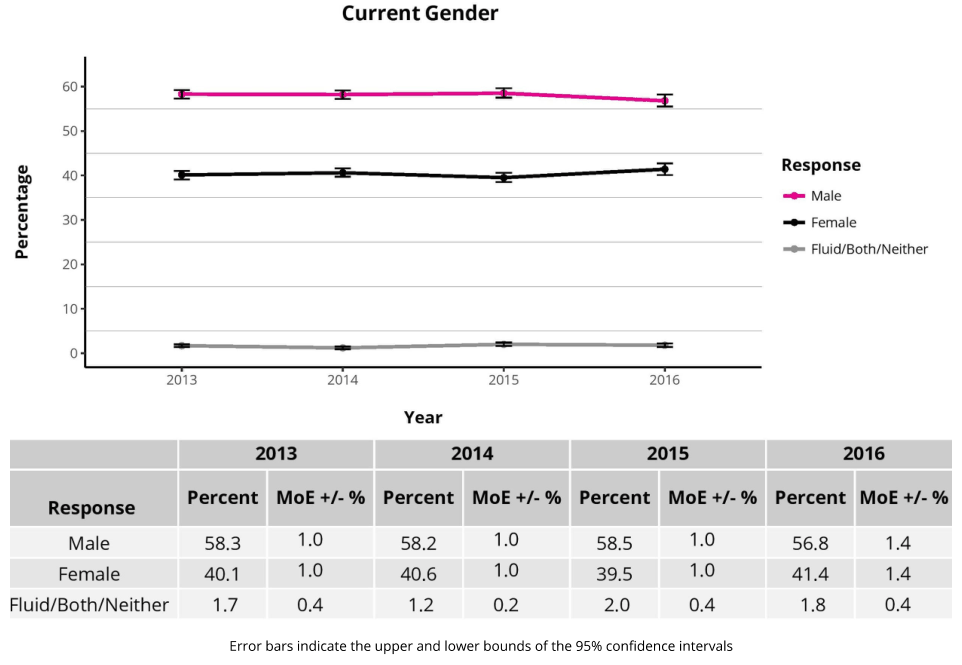

2016 Weighted Results
How the Census Works
What is the Census?
The Census is a collaborative research project that started in 2002. A research ethics committee at Université du Québec à Montréal (previously at Denver University) has determined that the project meets the standards to protect respondents and their confidentiality.
Although the BRC Census project is technically a survey and not a literal census (where data is collected from every member of a population), our methodology allows us to report on the entire population of Black Rock City (BRC), not just on the individuals who participate directly in our data collection.
The BRC Census project is made possible through the collective effort of volunteers, academic researchers, and the Burning Man Project. Our thanks to everyone whose contributions went into the creation of this report!
Reading This Report
This AfterBurn report is provided as an overview of the results of the 2016 BRC Census project. It is not a comprehensive report of 2016 results. If you would like to see:
- Detailed descriptions of methodology for data collection and analysis
- Terminology definitions (e.g., margin of error, 95% confidence intervals, etc.)
- Visualizations for 100+ questions collected in the 2016 online survey
Go to https://goo.gl/CE74IV to view the full 2013-2016 Population Analysis
Method and Weighting Procedures
During Burning Man, Census volunteers conduct a random sample by administering a short socio-demographic survey to randomly selected Burners who agree to participate. From 2013-2016, 5-10% of the BRC population participated in this random sampling process.
After the event, the link to the online Census survey is sent out via email lists, social media, the Burning Man website, etc. Some Burners participate in this survey but others do not. To remove this self-selection bias, the online survey results are adjusted (or “weighted”) based on the results of the random sample.
From 2013 to 2016, the number of completed forms (and the associated survey sampling rate) were, respectively, 11,919 (17%), 11,676 (18%), 9,585 (14%), and 7,137 (11%). This "survey sampling rate" indicates the percentage of the BRC population who completed the online survey in a given year based on the population count reported in each annual Burning Man report.
Sociodemographic Characteristics
Prior Burning Man Experience
Burns Attended
![Percentage 40 3 2 heh Number of Burns Attended 2013 204 Year 2015 2016 34 57 8-10 11+ Error bars indicate the upper and lower bounds of the 95% confidence intervals Percent MoE+/-% 38.6 18.4 10.9 146 82 5.0 42 2013 1.0 08 06 08 04 04 04 PERCENT VIRGINS 38.6% 35.1% 35.9% 2016: 39.3% 203 04 20 Percent MoE+/-% Percent MoE+/-% Percent MoE+/-% 35.1 14.0 13.1 137 123 63 55 2014 1.0 06 08 08 08 06 06 35.8 209 12.2 Wa 10.7 47 46 2015 1.0 1.0 08 06 08 0.4 0.4 39.3 19.1 16 13.0 88 42 40 2016 14 10 08 08 0.6 04 0.4](images/p007.png)
Age Groups

Education
![Education Achieved 50 wo. E–_–––_z–_ #1 Other Certifications 25 e ® 20 Respon fo 20 J Response e I * None e 1 2 = –e Highschool = B10 G s a 20 = some college > = 5 eee Associate Degree 0 2013, 2014 2015 2016 10: “® Bachelor's Degree Graduate Degree Year Response other only a ––– © Tech Vocational* =e Healing =® Beauty 2013 2014 2015 2016 2013 2014 2015 2016 Year Percent MoE +/-% Percent MoE +/-% Percent MoE +/-% Percent MoE +/-% 2013 2014 2015 2016 Response Tech Vocational* 10.4 06 93 06 208 08 88 08 Response Percent MoE+/-% Percent MoE+/-% Percent MoE+/-% Percent MoE+/-% 0"! P Healing 37 04 34 04 a7 04 28 04 None 09 02 04 02 0.6 02 03 0.2 Beauty 09 02 M 02 14 02 08 02 High School 55 06 4s oa 52 06 47 06 TD * The spike in tech vocational certifications in 2015 is likely due to a change in question Senp@sig I anil WS ne 0.8 16.8 0.8 145 i wording, rather than a change in BRC population characteristics. The 2013, 2014, and Associate Degree 5.5, 04 56 od 54 06 46 06 2016 online surveys all included identical questions about education and certifications Bachelors Degree I 426 FTO Te Fd aa aT aa 4 while the question was worded differently in the 2015 survey Graduate Degree 24.1 08 270 08 278 1.0 313 12 Other Only 13 02 14 02 os 02 14 04 Error bars indicate the upper and lower bounds of the 95% confidence intervals](images/p009.png)
Personal Income
![Percentage Personal Income Before Taxes (for the Previous Calendar Year)* 30 zs; Response 20; = = = > => $0-24,999 e $25,000-49,999 50,000.99,999 10 $100,000-299,999 e $300,000+ 2013, 2014 2015 2016 Year In 2015 and 2016, explanatory text was added requesting that respondents not include their spouse's income as their own. While this explanatory text was missing in 2013 and 2014, all four years’ surveys explicitly asked for the respondent's personal income before taxes in the previous calendar year 2013 2014 2015 2016 Response Percent MoE+/-% Percent MoE+/-% Percent MoE+/-% Percent MoE+/-% 0-24,999 275 1.0 25.9 1.0 24.6 1.0 29 1.2 25,000-49,999 21.8 0.8 21.5 0.8 22.0 1.0 21.2 1.2 50,000-99,999 29.5 0.8 29.2 1.0 29.5 1.0 29.5 1.2 100,000-299,999 18.9 08 20.7 0.8 21.0 08 24.0 1.2 300,000+ 23 0.2 27 0.4 29 0.4 3.4 0.4 Error bars indicate the upper and lower bounds of the 95% confidence intervals MEDIAN PERSONAL INCOME 2013: $51,100 N14: $53,900 2015: $54,100 2016: $60,000](images/p010.png)
Household Income
![Percentage 40 30 20 Household Income Before Taxes (for the Previous Calendar Year) 2015 Year 2015 Percent MoE+/-% Percent MoE +/-% Response 0-24,999 12.2 25,000-49,999 162 50,000-99,999 28.6 100,000-299,999 36.8 300,000+ We) 0.8 0.8 1.0 1.0 0.6 2016 2016 nil2) 1.0 14.7 1.0 26.9 1.2 39.1 1.4 8.0 0.8 Response 0-24,999 “= $25,000-49,999 MEDIAN HOUSEHOLD INCOME conse 2015: $89, 400 “= $200,000 2016: $44,200 Tie 20U3 AND ZOU ONLINE SURVEYS ofD NOT INCLUDE QUESTIONS ABOUT HOUSEHOLD INCOME 50 DATA PRESENTED HERE ARE FROM 2015-2016 Error bars indicate the upper and lower bounds of the 95% confidence intervals](images/p011.png)
Current Gender

Sexual Attraction and Orientation
![Percentage Sexual Attraction 50 40: Response only Opposite Sex so “> Mostly Oppose Sex Eat e Mos Same sex 20: > Only same Sex oe 28 ara 2s aie Year 2013, (2014 2015 2016 nesponse cent MoE+/% Percent MoE+/-% Percent MoE4/-% Percent MoE+/-% Only Opposite Sex 50.5 1.0 478 1.0 48.0 12 48.2 14 Mostly Opposite Sex 33.8 1.0 36.7 1.0 35.8 1.0 36.0 14 Equally 63 06 63 04 60 06 63 06 MostySameSex 34 0436's Osi Onlysamesex 5104. si9s–i C(O Not Sure o4 02, «03:=S«–iO2siHSsCisit NoSexualAttraction 04 02 03 02 03 02 02 02 Percentage Sexual Orientation SYX__ +s 60 Response Heterosexual “= Gay orLesbian Bisewal Bicurious o > Asexual Refuses Labels SS 2013 2014 2015 2016 Year 2013 2014 2015 2016 Response Percent MoE+/-% Percent MoE+/-% Percent MoE+/-% Percent MoE+/-% Heterosexual 68.5 1.0 676 10 665 1.0 66.4 1.4 Gayor Lesbian 7.2 06 74 06 77 06 78 08 Bisexual 83 06 93 06 94 06 97 08 Bicurious 11.0 06 1.0 06 112 06 17 08 Asexual 04 02 02 02 04 0.2 04 02 Refuses Labels 4.7 04 a7 04 46 04 39 06 Error bars indicate the upper and lower bounds of the 95% confidence intervals](images/p013.png)
Relationship Status
![Percentage 60 40 Do You Consider Yourself Married? Your Life With a Partner? ae Ee a Response 20 No 5 oo –––– Yes 5 2 Sometimes 10% = _– 0 2018 B04 2015 216 Year Year 2015 2013 2014 Percent MoE +/-% Percent MoE +/-% Response Response N eon ATG ei TG No 36.2 1.0 7 = Ba ay ae os Yes-NotMarried 32.7 1.0 z = Bie om ee 06 Yes-Married 22.7 08 i ema’ It's Complicated 8.5 06 Error bars indicate the upper and lower bounds of the 95% confidence intervals In the Default World, Do You Share 35.9 314 25.2 75 THE 2013 AND 2014 ONLINE SURVEYS ASKED ABOUT RELATIONSHIPS DIFFERENTLY FROM THE 2015 AND 2016 ONLINE SURVEYS Response No Yes - Not Married Yes - Married Its Complicated Percent MoE+/-% Percent MoE+/-%](images/p014.png)
Ethnoracial Background
![Percentage Ethnoracial Diversity in BRC 80: eee 60 Response “> White/Caucasian (non-Hispanic) tt rr rrr nnn reer rece eee cece > Asian 10 a 4 =–® Hispanic/Latino Et I I a Native American “= Other or Multiple 0 2013 2014 2015 2016 Year 2013 2014 2015 2016 Response Percent MoE+/-% Percent MoE+/-% Percent MoE+/-% Percent MoE+/-% White/Caucasian (non-Hispanic) 82.9 08 811 08 80.2 1.0 79.1 12 Asian 37 0.4 39 0.4 42 04 57 0.6 Hispanic/Latino 3.0 04 41 0.4 51 0.6 43 0.6 Black 09 0.2 07 0.2 07 0.2 11 0.2 Native American 0.5 0.2 04 0.2 0.4 0.2 04 0.2 Other or Multiple 91 0.6 97 0.6 95 0.6 94 08 Error bars indicate the upper and lower bounds of the 95% confidence intervals](images/p015.png)
Current Place of Residence
![Percentage 80 60 S–_ Region of Residence Respor Africa 07 Asia 02 Canada 24 To - Europe 73 Latin America* 3.3 AustraliaorNZ 0.7 UKorireland 3.2 USA 817 Response Africa Asia Canada Europe e Latin America * Australia or NZ UK or Ireland USA 2013 2014 Year 2015 2016 Error bars indicate the upper and lower bounds of the 95% confidence intervals 2013 02 0.0 0.4 06 0.4 02 0.4 08 06 04 18 48 44 07 25 843 2014 02 02 0.2 04 0.4 02 02 08 07 06 62 53 1.0 22 33 79.6 2015 02 02 06 06 02 04 04 10 1 09 67 55 08 28 27 79.5 2016 In the plot (left) and table (above), Latin America includes Central and South America in addition to the countries of North America that are South of the USA nse Percent MoE+/-% Percent MoE+/-% Percent MoE+/-% Percent MoE+/-% 04 02 08 08 02 06 06 12](images/p016.png)
US Resident Data
![Percentage State of Residence (US Residents Only) 2013 2014 2015 2016 Response A Percent MoE#/-% Percent MoE¥+/-% Percent MoE+/-% Percent MoE+/-% Response mn A 519 12 $23 12 493 12 5 16 mer WA Ny 5906 5706 72 06 81 08 iy WA 64 06 59 06 63 06 63 08 eee OF NV 66 06 65 06 62 06 57 08 co OR 54 06 57 06 43 06 44 06 co 3004 36004 3506 40 06 AZ ™ 24 04 19 04 2 04 23 06 MA az 1804 18 04 2200 04 18 04 Ww MA 16 04 1504 1504 1804 our IL 18 04 17 04 20 Of 1504 f UT 19 04 16 04 1504 1504 Error bars (left) indicate the upper and lower bounds of the 95% confidence intervals. The plot (left) and table (above) display any state of residence reported by 1.5% or more of the BRC population who reported residing in the US on the 2016 online survey. Residents of states comprising smaller proportions of the US population are omitted here, as are BRC residents residing outside of the US 2013 2014 2015 2016 Year](images/p017.png)
Language
![Percentage Native Language (Defined as the First Language Participant Learned and Still Uses) ee Response 2013 2014 2015 2016 Chinese Percent MoE#/-% Percent MoE+/-% Percent MoE+/-% Percent MoE+/-% Response English Chinese 0.6 02 06 02 1 02 1.0 02 sw French English 87.7 0.6 83.6 08 80.1 10 78.1 1.2 “© German French 1.7 02 28 04 29 04 37 06 Dorr ttt ttre © Hebrew German 1.4 02 iz 02 23 04 25 04 ee eee we italian Hebrew 07 02 09 02 09 02 1.0 04 italian 03 02 06 02 06 02 1.0 oa nem Russian Russian 16 02 20 0.4 22 04 22 0.4 Spanish Spanish 7 0.2 aa 04 34 04 28 06 T Other Other 43 oa 51 04 65 06 76 08 Error bars indicate the upper and lower bounds of the 95% confidence intervals. The plot (left) and table (above) display any native language reported by 1% or more of the BRC population in any year. An additional 13 languages are included in the online survey with population proportions under 1% in 2013-2016. They are represented here as part of the "Other" category along with responses from participants who selected the "Other" option from the online survey 2013 2014 2015, 2016 Year](images/p018.png)
Religion and Spirituality
![Percentage 40 30 20 Spirituality Response Religious Spiritual, Not Religious Atheist e Agnostic e Deist Don't Know 2013 2014) 2015) 2016 Year 2013 2014 2015 2016 esponee! Percent MoE+/-% Percent MoE+/-% Percent MoE+/-% Percent MoE+/-% Religious 63 0.4 EG} 0.4 5.4 06 61 06 Spiritual, Not Religious 49.2 1.0 50.4 10 458 1.0 46.5 14 Atheist 21.9 08 213 08 23.9 1.0 24.8 1.2 Agnostic 15.5 08 146 08 159 08 147 1.0 Deist 08 0.2 08 0.2 09 02 08 0.2 IDon't Know 63 06 74 0.6 8.0 06 74 08 Error bars indicate the upper and lower bounds of the 95% confidence intervals](images/p019.png)
![Percentage De eieneaispein aie iniaeire ea eine ein amnineerein ee Response Religion or Religious Denomination 2014 2015 2016 Response Percent MoE+/-% Percent MoE +/-% Percent MoE +/-% wane eee eee ee eee eee eee eee eee eee eee > Buddhist Buddhist Ba 0.4 18 0.4 19 0.4 Catholic oe christian (other) Catholic 6.1 0.4 Za 0.6 7.0 08 Hinau Christian (Other) 3.8 0.4 4.0 0.4 4.6 0.6 Jewish Hindu 0.4 0.2 0.5 0.2 07 0.2 Muslim Jewish 6.6 0.6 6.6 0.6 6.4 06 e Pagan Muslim 0.3 0.2 0.5 0.2 0.6 0.2 2015 Year “> Pastafarian Pagan 14 0.2 1.2 0.2 1.2 0.4 et= Protestant Pastafarian 1.6 0.2 1.6 0.2 11 0.2 a Protestant 24 0.2 23 04 26 04 easNatalizon Other 4a 04 3.2 04 23 04 No Religion 15 1.0 n3 1.0 15 12 THE 2013 ONLINE SURVEY DID NOT INCLUDE ALL OF THE ANSWER OPTIONS PROVIDED IN 2014-2016, SO DIRECT COMPARISON ACROSS ALL FOUR YEARS 1S IMPOSSIBLE. THE DATA PRESENTED HERE ARE FROM 2014-2016 2016 Error bars indicate the upper and lower bounds of the 95% confidence intervals](images/p020.png)
Life in Black Rock City
Transportation
![Percentage How Did You Arrive at BRC? THE 2013 AND 2014 ONLINE SURVEYS ASKED ABOUT TRANSPORTATION METHODS DIFFERENTLY, 50 DIRECT COMPARISON 15 IMPOSSIBLE. OVERALL TRENDS INCLUDE e Arelative decrease in Gate entry via vehicle (99.1% in 2013, 96.0% in 2014) e Arelative increase in Burner Express Bus use (from 1.9% in 2014) e = Arelative increase in Airport traffic (0.5% in 2013, 0.8% in 2014) THE PLOT (LEFT) AND TABLE (BELOW) INDICATE ONLINE SURVEY RESPONSES FROM 2015-2016 Response 2015 2016 ao Gate tena Percent MoE+/-% Percent MoE+/-% Point 1 Gate 915 08 89.6 08 Burner Express Bus Point 1 1 02 09 02 Other Shuttle Burner Express Bus 6.0 0.6 76 08 we BRC Airport Other Shuttle 03 0.2 03 02 Other BRC Airport 08 0.2 14 04 Other 03 02 06 02 Year Error bars indicate the upper and lower bounds of the 95% confidence intervals](images/p022.png)
![Percentage Mehleke Type'ttat Eateiipente wtha Uspatied THIS QUESTION WAS ASKED DIFFERENTLY IN 2014 AND NOT ASKED IN 2013 gin a Venicie via Gate or Point) SINCE 2OL4, OVERALL TRENDS INCLUDE e = Arelative decrease in pickup truck use (from 9.5% in 2014) e =Arelative decrease in trucks with trailers (from 18.3% in 2014) THE PLOT (LEFT) AND TABLE (BELOW) INDICATE ONLINE SURVEY RESPONSES FROM 2015-2016 2015 2016 Response Percent MoE +/-% Percent MoE +/-% Bus Response car Bus 18 04 1.6 04 Motorcycle Car 233 1.0 23.0 1.2 Pickup Motorcycle 0.2 0.2 0.2 02 eeaRY Pickup. 85 0.6 8.6 08 Semi Truck w/Trailer RV 179 1.0 188 qa neg san Semi Truck w/Trailer 0.9 0.2 08 02 S = me Truck w/Trailer one suy 16.0 1.0 15.7 1.0 Truck w/Trailer 15.8 08 13.4 1.0 Not Applicable 215 He Other 8.2 06 85 08 Year Not Applicable 74 06 95 08 Error bars indicate the upper and lower bounds of the 95% confidence intervals](images/p023.png)
Reasons for Attending Burning Man
![Percentage 20 Year Reasons for Going to BRC This Year (Participants Selected Up to 3 Reasons) Response Tosee/experience the art “> Tocreate/work on a project Tobe with friends or like-minded people / feel a sense of belonging Tomeet people who are different from me “> Toplay and experience freedom Toconsume intoxicants Toescape the world for atime Toexpress myself “> To experience gifting and decommodification Torely on myself and practice useful skills Toperform and practice artistic skills Tossatisfy my curiosity / checkit off my “bucket list" Togrowor connect spiritually Tosatisty someone else's wish that I be there Response To see/experience the art To create/work on a project To be with friends or like-minded people / feel a sense of belonging To meet people who are different from me To play and experience freedom To consume intoxicants To escape the world for a time To express myself To experience gifting and decommodification To rely on myself and practice useful skills To perform and practice artistic skills To satisfy my curiosity / check it off my "bucket list” To grow or connect spiritually To satisfy someone else's wish that I be there Error bars indicate the upper and lower bounds of the 95% confidence intervals THE ANSWER OPTIONS FOR THIS QUESTION WERE DIFFERENT IN THE ONLINE SURVEYS FROM 2013 AND 2014, SO DIRECT COMPARISON ACROSS ALL FOUR YEARS 15 IMPOSSIBLE. DATA PRESENTED HERE ARE FROM 2015-2016 2015 2016 Percent MoE +/-% Percent MoE +/-% 56.7 fr 62.5 14 137 08 12.0 08 58.2 12 59.2 14 2 08 135 1.0 44.0 12 39.7 14 40 06 37 06 32.7 12 28.8 14 90 08 93 08 10.2 08 87 0.8 93 08. 75 08 33 04 23 04 84 08 10.2 1.0 23.6 1.0 216 12 34 04 Za 0.4](images/p024.png)
Burning Man Experience
![Percentage How Much Did You Enjoy Your Experience in BRC This Year? 60 Response HB extreme ALot 7 40) “ Do You Intend to Come Back to BRC in the Future? de r I Somewhat 80 asi Response 20: PB soca ait Bh se sotutely a. eo © Probably a z = & L g Not Sure L Lo - - = 40 [Bl Probably Not 2013 2014 2015 2016 5 a Absolutely Not Year = ¥ 20 . ze 2013 2014 2015 2016 = Percent MoE+/-% Percent MoE +/-% Percent MoE+/-% Percent MoE +/-% 2 a i = Reroreel °. LL La a a Extremely 58.0 1.0 56.0 12 52.2 12 575 14 2013 2014 2015 2016 Alot 332 1.0 344 1.0 35.3 12 343 14 Year Somewhat 7.8 06 80 06 105 08 66 08 ae ma ai aie Ait 09 0.2 14 02 19 04 15 04 Notatall 0.2 0.0 02 0.0 04 0.0 o4 0.0 Response Percent MoE/-% Percent MoE+/-% Percent MoE+/-% Percent MOE +/-% Absolutely 76.1 08 78.2 1.0 75.3 1.0 768 12 Probably 174 08 158 08 18.4 1.0 176 12 Not Sure 49 04 46 04 48 06 38 06 ProbablyNot 1.4 02 10 0.2 13 0.2 1s 04 Absolutely Not 0.2 0.0 03 02 02 0.0 04 0.2 Error bars indicate the upper and lower bounds of the 95% confidence intervals](images/p025.png)
Leave No Trace
![Percentage 80 60 40 20 0 Do You Sort Your Waste at Camp During Burning Man? (Asked Only in 2016) a i - Le –_ ves No, Someone No, tis Sorted at No, RAllGoes I Don't Know Else Does a Transfer Station toa Landfill Response Response Percent MoE +/-% Yes No, Someone Else Does No, it is Sorted at a Transfer Station No, it All Goes to a Landfill I Don't Know 75.0 12 6.6 08 39 0.6 11.0 1.0 3.4 0.6 Percentage What Types of Waste Do You Sort? (Responses from Participants Reporting In-Camp Waste Sorting During Burning Man, Asked Only in 2016) 80 60 40 _ 20 Lee o Recycling Burnables Compost Other Response Response Percent MoE +/-% Recycling 80.1 12 Burnables 46.9 14 Compost 35.8 14 Other 17 08 Error bars indicate the upper and lower bounds of the 95% confidence intervals](images/p026.png)
Power Sources On-Playa
![Percentage 60} 40 Power Source(s) Used On-Playa (Participants Selected All That Applied) 201 a tT Response None e- Batteries Solar Wind Vehicle Generator Camp Generator Another camp's Power e BRC Grid Response None Batteries Solar Wind Vehicle Generator Camp Generator Another Camp's Power BRC Grid 2014 2013 Year 205 2014 Bie 2015 2016 Percent MoE +#/-% Percent MoE +/-% Percent MoE+/-% Percent MoE +/-% 122 593 30.1 09 207 36.5 25 43 06 10 10 02 os 10 04 oa 84 585 342 06 193 438 26 60 06 1.0 1.0 02 os 1.0 04 06 88 497 353 06 19.4 446 18 39 os 12 12 02 10 12 04 04 64 541 40.1 09 20.2 46.0 23 43 os 14 14 02 12 14 04 06 Error bars indicate the upper and lower bounds of the 95% confidence intervals](images/p027.png)
Camping in Black Rock City
![Percentage THE BURNING MAN PLACEMENT TEAM ASSIGNS MANY CAMPS TO LOCATIONS WITHIN BRC Camp Location Assigned? Response Boone xnow 7 om Friends choice os wo Ne nelghbors x0 Percentage aie Response Year 2013 2014 (2015 (2016 20 –– Percent MoE +/-% Percent MoE +/-% Percent MoE +/-% Percent MoE +/-% – Response – Yes 54.3 1.0 64.0 1.0 61.4 12 643 14 10 EF No 40.5 1.0 314 1.0 33.0 12 296 14 = Don'tKnow 5.1 04 46 04 5.6 06 61 08 =–– = 2015 20 que Year Space available Response e Nearby attractions eas 50 ‘=> Favorable playa surface conditions =e Different than last year 2015 FOR CAMPS NOT PLACED BY THE PLACEMENT TEAM, OTHER FACTORS CONTRIBUTE TO CAMP LOCATION DECISIONS Camp Location Considerations e Same as last year Quiet e Access to all-night parties I don't know 2016 Percent MoE+/-% Percent MoE +/-% 14.6 9.0 39.8 54.9 168 17.2 43 20.8 3.0 37 14 1.2 20 2.0 126 75 35.0 52.6 18.2 18.2 34 275 2.0 48 18 1.2 THE LOCATION CONSEDERATION QUESTION (RIGHT) WAS NOT INCLUDED IN THE 2013 OR 2014 ONLINE SURVEYS, 50 DATA PRESENTED RIGHT ARE FROM 2015-2016 Error bars indicate the upper and lower bounds of the 95% confidence intervals](images/p028.png)
![Percentage Number of Camp Members Number of Participant's Family Members in BRC Ada LE LL 20 l 3s Percentage Year 2013 204 2015 2016 2S 3016 Percent MoE +/-% Percent MoE+/-% Percent MoE+/-% Percent MoE +/-% am –_ mat aa == fexpone nent “ee nen –_ = “en = ma ; of oo ” e “ e a“ B oy 99th ee ake 88 NO DATA WAS COLLECTED TO DETERMINE WHETHER FAMILY MEMBERS ce GS OZ (ABOVE) WERE ALSO MEMBERS OF THE PARTICIPANT'S CAME (LEFT) ve soe 508s tos Gas os SE) THE TWO DATASETS PRESENTED HERE ANE INDEPENDENT OF ONE ANOTHER Error bars indicate the upper and lower bounds of the 95% confidence intervals](images/p029.png)
RV/Camper Use
![Percentage 60 40 Did You Stay in an RV or Camper-Trailer? Response No Yes Not Sure Year 2013 2014 2015 2016 Percent MoE+/-% Percent MoE +/-% Percent MoE +/-% Percent MoE +/-% Response No 70.4 1.0 70.7 1.0 B3 10 ns 1.2 Yes 28.8 10 28.6 1.0 263 10 28.4 1.2 NotSure 0.8 0.2 07 0.2 0.4 02 01 0.0 RV or Camper-Trailer Serviced While On-Playa (Responses from Participants Reporting RV or Camper-Trailer Use) Response Be He on know Percentage 2015 2016 Year 2015 2016 Response Percent MoE+/-% Percent MoE +/-% Yes 36.2 22 40.8 25 No 617 22 57.2 25 IDon'tKnow 2.0 06 2.0 1.0 THIS QUESTION (ABOVE) WAS NOT INCLUDED IN THE 2013 OR 2014 ONLINE SURVEYS, SO DATA PRESENTED ABOVE ARE FROM 2015-2016 Error bars indicate the upper and lower bounds of the 95% confidence intervals](images/p030.png)
Other Burning Man-Related Variables
Year Round Participation
![Percentage Attended Burning Man Regional Events? Response Bl vcs. attended Bl ves, volunteered Bh so. on emait vist Bf no. Not connected 40 2013 2014 2015 2016 Year 2013 2014 2015 2016 Response Percent MoE+/-% Percent MoE+/-% Percent MoE+/-% Percent MoE+/-% Yes, Attended S533) 1.0 37.0 1.0 ERS) 1.0 B22) 1.2 Yes, Volunteered 12.4 0.6 14.4 0.8 12.0 0.8 11.1 0.8 No, On Email List 16.9 0.8 16.4 08 19.8 08 18.2 1.0 No, Not Connected 35.5 1.0 32.2 1.0 Bare 1.0 38.4 14 Error bars indicate the upper and lower bounds of the 95% confidence intervals](images/p032.png)
Ten Principles
![Which of the Ten Principles do You Practice Most Frequently in Which of the Ten Principles do You Find Most Difficult to Practice in Everyday Life? (Participants Selected Up to 3, Asked Only in 2016) Everyday Life? (Participants Selected Up to 3, Asked Only in 2016) Radical Inclusion Radical Inusion iting iting Decommoditcation Decommodifcation Radical Set Reliance g roicsteneson) a a Radical Set Reliance B Radical set-Expression Communal Effort FB communal tor Che Responsiity hic Responsibility Leave No Trace Leave No Trace Paripation Participation Immedaoy immediacy o 70 ® w w 3 o Response Percent MoE +/-% Percentage Response Percent MoE +/-% Radical Inclusion 3751.4 Radical inclusion 1921.0 Gifting 28 = 12 Gifting 148 10 Decommodification 96 08 Decommodifiction 475 1.4 Radical Self-Reliance 549 1.4 Radical Self-Reliance 9.708 Radical Self-Expression 224 1.2 Radical Self-Expression 255 1.2 Communaléffort 19.1 1.0 CommunalEffort 128 «1.0 CivicResponsibilty 2431.2 CWvic Responsibility 11.108 LeaveNoTrace 4061.4 LeaveNoTrace = 158 1.0 Participation 233012 Participation 29 10 immediacy 2712 immediacy 29 12 Error bars indicate the upper and lower bounds of the 95% confidence intervals](images/p033.png)
Spending for Burning Man
![Percentage Amount of Money (USD) Spent to Go to Burning Man (Excluding Ticket Price) hs I THIS QUESTION WAS NOT INCLUDED IN THE 2013 ONLINE SURVEY 50 DATA PRESENTED HERE ARE FROM 2014-2016 Response Dyes PARTECEPANTS WERE ASKED TO PROVIDE THEIR BEST ESTIMATE (soso (TN US DOLLARS) OF HOW MUCH THEY SPENT TO GO T0 BLACK Boron ROCK CITY AND RETURN, INCLUDING FUEL, FOOD 1000-2500 Bisson LODGING, AIRFARE, SUPPLIES, ETC., BUT EXCLUDING THE i 1 COST OF THEIR BURNING MAN TICKET I 2514 rd ae MEDIAN SOTH PERCENTILE Year 201: $1300 $2500 2014 2015 2016 Percent MoE+/-% Percent MoE +/-% Percent MoE +/-% Ans: $1300 $2000 Response 7 - - 0-250 23 0.4 23 0.4 24 0.4 2016: $1500 $3000 250-500 10.8 06 61 0.6 55 06 oe a : 2 “= : 2 “ s . * The 2014 online survey asked about spending ranges, but did 2500-5000 aa oO ra TD an 0) not ask for total UsD spent, so percentile data for 2014 was 5000+ 48 04 68 06 om a estimated differently than for 2015 and 2016 Error bars indicate the upper and lower bounds of the 95% confidence intervals](images/p034.png)
Economic Impact on Nevada
![Total Spent in Nevada (Average USD) Spending Ranges for Total Nevada Expenses 64 $617. $635 600. t–_–+–_–_ Tt 40 400 20. Response so a ag ri » Bi s520-1000 Year [Bl s1000-2500 2500-5000 Money Spent in Nevada (Average USD) a 10 [i ss000+ S150 Response Fuel Total Spent (USD) Percentage a g = Food F soo casing wie aia wis wie e = survival Year 3 - =e Fun 2013 2014 2015 2016 so Percent MoE+/-% Percent MoE+/-% Percent MoE+/-% Percent MoE +/-% 2014 2015 2076 Response Year $0-250 33.9 1.0 363 1.0 393 12 412 14 aa eas ae $250500 27.6 os 245 1.0 234 0 212 12 Total Total Total $500-1000 20.0 08 24 08 206 208 12 Response (usd) MOE (usp) MOE (usp) MOE*/- $1000-2500 12.9 06 137 08 135 08 13.1 1.0 Fuel $147 10 $135 2 $114 BI $2500-5000 4.1 04 23 04 26 04 28 0.6 Food $157 7 $150 5 $163 14 $5000 1.6 02 08 02 o7 02 09 04 Lodging $122 9 $127 13 $149 18 Suvvl $89 S535 wz THE 2013 ONLINE SURVEY INCLUDED QUESTIONS ABOUT TOTAL NEVADA EXPENSES (ABOVE) BUT a OO NOT ABOUT SPENDING CATEGORIES (LEFT), SO DATA PRESENTED LEFT ARE FROM 2014-2016 Error bars indicate the upper and lower bounds of the 95% confidence intervals](images/p035.png)
Ticket Source
![Percentage ll 40 2015 2016 Year Burning Man Ticket Source THE 2013 ONLINE SURVEY DID NOT INCLUDE THIS QUESTION AND THE 2014 SURVEY USED DIFFERENT WORDING 0 DATA PRESENTED HERE ARE FROM 2015-2016 Response “> Burning Man Open Sale Response Burning Man Open Sale Burning Man Direct Distribution “> Burning Man Direct Distribution Burning Man Low Income Program Secure Ticket Exchange Program (STEP) Burning Man Low Income Program someone I know Secure Ticket Exchange Program (STEP) Stranger Someone I Know Stranger Third Party Reseller Kids Ticket or No Ticket Other “* Third Party Reseller Kids Ticket or No Ticket Other Error bars indicate the upper and lower bounds of the 95% confidence intervals 45,0 21.6 5.0 0.6 21.6 33 0.6 0.1 23 1.2 1.0 0.6 0.2 1.0 04 0.2 0.0 0.4 39.4 24.0 67 3.2 19.7 34 0.9 0.2 29 Percent MoE +/% Percent MoE +/-%o 14 1.0 08 0.6 12 0.6 0.2 0.2 04](images/p036.png)
Ticket Cost
![Percentage 80 60 Burning Man Ticket Cost Response e Gift Less than Face Value Face Value More than Face Value Other I Don't Know 2014 Response “. = _ Gift 98 06 x= Less than Face Value 3.8 04 a – = Face Value 79.1 0.8 More than Face Value 1.8 02 2014 2015 2016 One a mA Year I Don't Know 02 0.2 Error bars indicate the upper and lower bounds of the 95% confidence intervals THE 2013 ONLINE SURVEY DID NOT ASK THIS QUESTION SO DATA PRESENTED HERE ARE FROM 2014-2016 7.6 12 87.3 28 08 0.2 0.6 0.2 08 04 0.2 0.0 78 17 86.6 2m 1.0 0.3 Percent MoE+/-% Percent MoE+/-% Percent MoE+/-% 0.6 0.4 1.0 0.4 0.2 0.2](images/p037.png)
Census Team Information
Contributions and Acknowledgements
BRC Census General Coordination and Scientific Committee: Dana “DV8” DeVaul, Dominic “Hunter” Beaulieu-Prévost, and S. Megan “Countess” Heller
Data Analysis: Dominic “Hunter” Beaulieu-Prévost, Aaron “Murse” Shev, and Dana “DV8” DeVaul
Report Coordination and Visualizations: Dana “DV8” DeVaul, Aaron “Murse” Shev, and Sarah “Picky” Williamson
Report Editing and Proofreading: Sherry “Moonbeams” Beard, Andi “Sonder” Morency, Rachel “Chipper” McKay, Sarah “Picky” Williamson, Richard “Spewey” Quin, and Netti “Butterfly” Johnston
The 2016 Census Lab: The project also involved more than 150 essential volunteers: research collaborators, volunteer coordinators, statisticians, camp builders, gate samplers, keypunchers, Census Lab hosts, graphic designers, and many more
We would also like to thank the Burning Man Communications Department, especially Zac Cirivello and Laura “Dr. Daneosaur” Dane, and the Burning Man Tech Team, especially Erika “Deputy” O’Connor and Mark “Markle” Levitt
Finally, our thanks to the Burning Man Project for the resources they provide both on playa and off playa and for believing in the project!
Still Curious?
For more information about the 2016 results go to https://goo.gl/CE74IV to download the full 2013-2016 Population Analysis
To contact the Census Lab, email census@burningman.org
Census Lab Blog: http://journal.burningman.org/census
Census Lab Data Archive: http://burningman.org/culture/history/brc-history/census-data/
Citation: DeVaul, D.L., Beaulieu-Prévost, D., Heller, S.M., and the 2016 Census Lab. (2017). Black Rock City Census: 2016 AfterBurn Report. Black Rock City Census. Copyright © 2017 DeVaul et al.
This is an open-access report distributed under the terms of Creative Commons Attribution License, which permits unrestricted use, distribution, and reproduction in any medium, provided the original authors and source are credited.